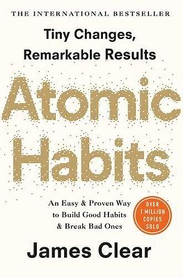
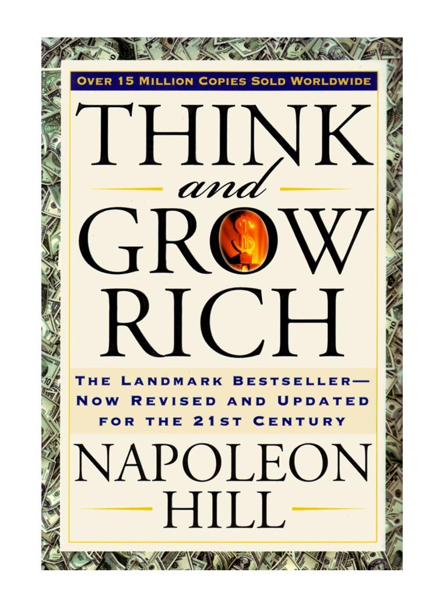

Books

ATOMIC HABITS
James Clear
Atomic Habits An Easy & Proven Way to Build Good Habits & Break Bad Ones James Clear Print Ebook Audiobook
Summary in 100 words or less Habits are the compound interests of self-improvement. True behavior change is
identity change, and every action you take (habits) is a vote for the type of person you wish to become
(identity).

BIG MAGIC
Elizabeth Gilbert
Big Magic is author Elizabeth Gilbert’s guide to leading a more fulfilled life by making creativity, in any
guise that suits you, a part of your daily existence. The book offers both spiritual wisdom on how to work
with the magical forces of creativity, as well as suggestions on how to create effectively and productively.

DEEP WORK
Cal Newport
Cal Newport’s book Deep Work is based upon the science of productivity. Cal claims that deep work – working
in a state of intense concentration on a single job without interruptions – is the best method to get more
meaningful work done. The book explains why deep work increases output while being practiced by a small
number of people.

RICH DAD POOR DAD
Robert T. Kiyosaki
Rich Dad, Poor Dad combines autobiography and personal advice to explain how to become financially
independent and wealthy. It is the author’s belief that the knowledge the upper class passes down to their
children is what makes them rich (and stays that way). You may still be wondering if you should read the
book

THE ALCHEMIST
Paulo Coelho
The Alchemist tells the story of a young shepherd named Santiago who is able to find a treasure beyond his
wildest dreams. Along the way, he learns to listen to his heart and, more importantly, realizes that his
dreams, or his Personal Legend, are not just his but part of the Soul of the Universe.

THE SECRET
Rhonda Byrne
The Secret is a 2006 self-help book by Rhonda Byrne, based on the earlier film of the same name. It is based
on the belief of the pseudoscientific law of attraction, which claims that thoughts can change a person's
life directly. The book alleges energy as assurance of its effectiveness.

THINK AND GROW RICH
Napoleon Hill
Think and Grow Rich is a book written by Napoleon Hill in 1937 and promoted as a personal development and
self-improvement book. He claimed to be inspired by a suggestion from business magnate and later-
philanthropist Andrew Carnegie. First published during the Great Depression, the book has sold more than 15
million copies

THINKING FAST AND SLOW
Daniel Kahneman
Thinking Fast and Slow" is all about how two systems — intuition and slow thinking — shape our judgment, and
how we can effectively tap into both. Using principles of behavioral economics, Kahneman walks us through
how to think and avoid mistakes in situations when the stakes are really high.